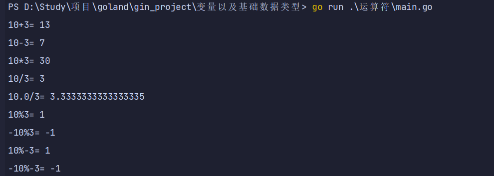
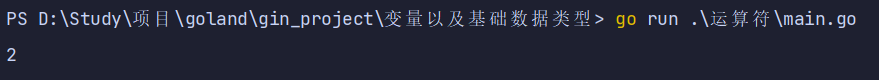
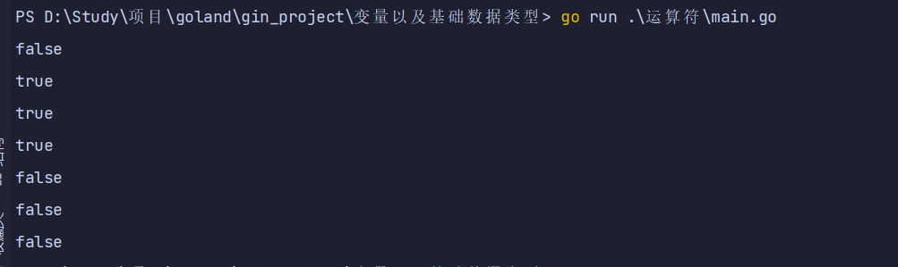
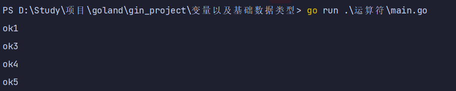
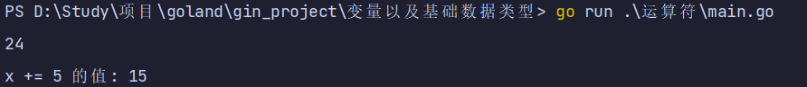

.算数运算符
算数运算符使用、
package main
import (
"fmt"
)
func main() {
fmt.Println("10+3=", 10+3) //10+3= 13
fmt.Println("10-3=", 10-3) //10-3= 7
fmt.Println("10*3=", 10*3) //10*3= 30
//除法注意：如果运算的数都是整数，那么除后，去掉小数部分，保留整数部分
fmt.Println("10/3=", 10/3) //10/3= 3
fmt.Println("10.0/3=", 10.0/3) //3.3333333333333335
// 取余注意 余数=被除数-（被除数/除数）*除数
fmt.Println("10%3=", 10%3) //10%3= 1
fmt.Println("-10%3=", -10%3) // -10%3= -1
fmt.Println("10%-3=", 10%-3) // 10%-3= 1
fmt.Println("-10%-3=", -10%-3) // -10%-3= -1
}

i++
package main
import (
"fmt"
)
func main() {
var i int = 1
i++
fmt.Println("i=", i) // i= 2
}

关系运算符
package main
import (
"fmt"
)
func main() {
var n1 int = 9
var n2 int = 8
fmt.Println(n1 == n2) //false
fmt.Println(n1 != n2) //true
fmt.Println(n1 > n2) //true
fmt.Println(n1 >= n2) //true
fmt.Println(n1 < n2) //flase
fmt.Println(n1 <= n2) //flase
flag := n1 > n2
fmt.Println("flag=", flag) //flag= true
}

逻辑运算符
package main
import (
"fmt"
)
func main() {
//演示逻辑运算符的使用 &&
var age int = 40
if age > 30 && age < 50 {
fmt.Println("ok1")
}
if age > 30 && age < 40 {
fmt.Println("ok2")
}
//演示逻辑运算符的使用 ||
if age > 30 || age < 50 {
fmt.Println("ok3")
}
if age > 30 || age < 40 {
fmt.Println("ok4")
}
//演示逻辑运算符的使用
if age > 30 {
fmt.Println("ok5")
}
if !(age > 30) {
fmt.Println("ok6")
}
}

赋值运算符
package main
import (
"fmt"
)
func main() {
d := 8 + 2*8 //赋值运算从右向左
fmt.Println(d) //24
x := 10
x += 5 //x=x+5
fmt.Println("x += 5 的值:", x) //24
}
